Morning
 Gotthard Pass in the Swiss Alps with its serpentine road illuminated at sunset.
Gotthard Pass in the Swiss Alps with its serpentine road illuminated at sunset.
 Foggy coniferous forest, possibly in the Pacific Northwest.
Foggy coniferous forest, possibly in the Pacific Northwest.
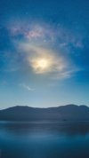
Lake Tekapo in New Zealand's South Island under a starry night sky with the Milky Way visible. Hobbiton Movie Set in Matamata, New Zealand, featuring a view from inside a hobbit hole.
Hobbiton Movie Set in Matamata, New Zealand, featuring a view from inside a hobbit hole.
 Misty autumn forest in the Adirondack Mountains of New York with morning light filtering through the trees.
Misty autumn forest in the Adirondack Mountains of New York with morning light filtering through the trees.
 Traditional Japanese garden with a pond and temple building, likely at a Buddhist temple or historic site in Japan.
Traditional Japanese garden with a pond and temple building, likely at a Buddhist temple or historic site in Japan.
 Lofoten Islands in Norway, viewed through a rock formation overlooking a fjord.
Lofoten Islands in Norway, viewed through a rock formation overlooking a fjord.
 A serene lake reflecting a dramatic golden sunset behind a silhouetted treeline.
A serene lake reflecting a dramatic golden sunset behind a silhouetted treeline.
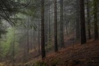
Misty coniferous forest with tall pine trees on a sloped terrain, likely in a temperate mountain region. A solitary tree perched on a rocky outcrop in a misty mountain range, likely in the Alps or Himalayas.
A solitary tree perched on a rocky outcrop in a misty mountain range, likely in the Alps or Himalayas.
 Acacia tree silhouette against sunset in the Maasai Mara National Reserve, Kenya.
Acacia tree silhouette against sunset in the Maasai Mara National Reserve, Kenya.
 Misty mountain road in Kauai's Na Pali Coast, Hawaii.
Misty mountain road in Kauai's Na Pali Coast, Hawaii.
 Temperate forest ecosystem with fern growth on moss-covered tree trunk.
Temperate forest ecosystem with fern growth on moss-covered tree trunk.
 Tre Cime di Lavaredo peaks in the Dolomites, Italy, shrouded in dramatic blue twilight fog.
Tre Cime di Lavaredo peaks in the Dolomites, Italy, shrouded in dramatic blue twilight fog.
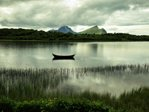
A fjord lake in Norway with distinctive mountain peaks under dramatic cloudy skies. Yosemite Valley in Yosemite National Park, California, with Half Dome visible on the right and morning fog blanketing the valley floor.
Yosemite Valley in Yosemite National Park, California, with Half Dome visible on the right and morning fog blanketing the valley floor.
 Badlands National Park in South Dakota at sunset.
Badlands National Park in South Dakota at sunset.
 Grindelwald valley in the Bernese Alps, Switzerland.
Grindelwald valley in the Bernese Alps, Switzerland.
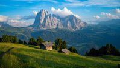
Sassolungo mountain peaks in the Dolomites of northern Italy with traditional alpine huts in the foreground. Klis Fortress near Split, Croatia, perched dramatically on a mountainside with morning fog rolling through the valley.
Klis Fortress near Split, Croatia, perched dramatically on a mountainside with morning fog rolling through the valley.
 Lake Sørvágsvatn/Leitisvatn on Vágar island in the Faroe Islands, featuring the dramatic Trælanípa cliff.
Lake Sørvágsvatn/Leitisvatn on Vágar island in the Faroe Islands, featuring the dramatic Trælanípa cliff.
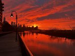
Lower Manhattan skyline at sunset viewed from a waterfront boardwalk in New Jersey, likely Hoboken or Jersey City.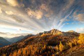
North Cascades National Park with golden larch trees in autumn. Mount Rainier National Park in Washington State, framed by evergreen trees.
Mount Rainier National Park in Washington State, framed by evergreen trees.
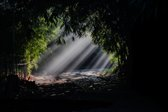
Bamboo forest with dramatic light rays filtering through the canopy.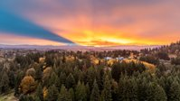
Mount Hood viewed from the Portland metropolitan area in Oregon during a dramatic sunset. Cherry blossoms reflecting in a lake at Nakatsuna Lake in Nagano Prefecture, Japan.
Cherry blossoms reflecting in a lake at Nakatsuna Lake in Nagano Prefecture, Japan.
 Phoenix Sky Harbor International Airport with downtown Phoenix skyline shrouded in golden morning fog.
Phoenix Sky Harbor International Airport with downtown Phoenix skyline shrouded in golden morning fog.
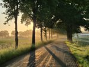
A tree-lined rural country road in the Netherlands during misty sunrise.Day
 A moody autumn forest trail covered with vibrant orange fallen leaves, likely in a temperate deciduous woodland.
A moody autumn forest trail covered with vibrant orange fallen leaves, likely in a temperate deciduous woodland.
 This appears to be Ponderosa Falls in Spearfish Canyon, Black Hills, South Dakota.
This appears to be Ponderosa Falls in Spearfish Canyon, Black Hills, South Dakota.
 This is digital fantasy artwork depicting a mystical triangular portal or monument in a surreal cosmic landscape, not a real geographical location.
This is digital fantasy artwork depicting a mystical triangular portal or monument in a surreal cosmic landscape, not a real geographical location.
 A lakeside lodge in the Dolomites region of northern Italy, likely at Lake Braies (Pragser Wildsee).
A lakeside lodge in the Dolomites region of northern Italy, likely at Lake Braies (Pragser Wildsee).
 Interior of a small rural chapel or church with autumn-decorated stained glass windows and wooden pews.
Interior of a small rural chapel or church with autumn-decorated stained glass windows and wooden pews.
 Banff Avenue in Banff, Alberta, Canada with Cascade Mountain in the background.
Banff Avenue in Banff, Alberta, Canada with Cascade Mountain in the background.
 Underwater fern fronds in a freshwater ecosystem, possibly in a tropical rainforest stream or pond.
Underwater fern fronds in a freshwater ecosystem, possibly in a tropical rainforest stream or pond.
 Mount Rundle and turquoise Lake Minnewanka in Banff National Park, Canadian Rockies.
Mount Rundle and turquoise Lake Minnewanka in Banff National Park, Canadian Rockies.
 Lake Lucerne in Switzerland, surrounded by the Swiss Alps and a small lakeside town.
Lake Lucerne in Switzerland, surrounded by the Swiss Alps and a small lakeside town.
 A colorful train crossing a steel bridge over the Katsura River in the forested mountains of Arashiyama, Kyoto, Japan during autumn foliage season.
A colorful train crossing a steel bridge over the Katsura River in the forested mountains of Arashiyama, Kyoto, Japan during autumn foliage season.
 A rural countryside scene at sunset or sunrise with silhouetted trees, birds in flight, and farm equipment.
A rural countryside scene at sunset or sunrise with silhouetted trees, birds in flight, and farm equipment.
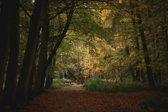
Deciduous forest path with autumn foliage in what appears to be a European woodland preserve.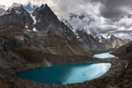
Cordillera Huayhuash mountain range with turquoise glacial lakes in Peru.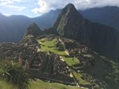
Machu Picchu, the 15th-century Inca citadel situated in the Cusco Region of Peru. This is the Alpe di Siusi (Seiser Alm) meadow with the distinctive Sassolungo/Langkofel mountain group in the Dolomites, Italy.
This is the Alpe di Siusi (Seiser Alm) meadow with the distinctive Sassolungo/Langkofel mountain group in the Dolomites, Italy.
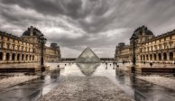
The Louvre Museum with its iconic glass pyramid in Paris, France. Florence, Italy, with its iconic Duomo (Cathedral of Santa Maria del Fiore) and surrounding Tuscan hills.
Florence, Italy, with its iconic Duomo (Cathedral of Santa Maria del Fiore) and surrounding Tuscan hills.
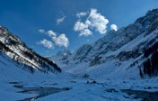
Snow-covered valley in the Himalayan mountain range, possibly Sonamarg in Kashmir. Mount Fuji viewed from Lake Saiko in the Fuji Five Lakes region of Japan.
Mount Fuji viewed from Lake Saiko in the Fuji Five Lakes region of Japan.
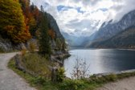
Lake Gosausee in the Dachstein Mountains of Austria during autumn foliage season. Meteora monasteries perched on dramatic rock formations in Thessaly, Greece.
Meteora monasteries perched on dramatic rock formations in Thessaly, Greece.
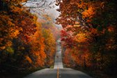
A rural country road lined with vibrant autumn foliage in what appears to be a New England forest.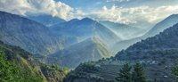
This is a mountainous landscape in the Himalayan region of northern India, likely in Himachal Pradesh or Uttarakhand, showing terraced fields and small settlements nestled among steep valleys.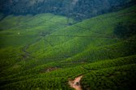
Tea plantations in Munnar, Kerala, India. Historic steam train traveling along the New River Gorge in West Virginia.
Historic steam train traveling along the New River Gorge in West Virginia.
 The Seven Sisters waterfall cascading into Geirangerfjord in Norway.
The Seven Sisters waterfall cascading into Geirangerfjord in Norway.
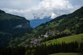
Wengen village nestled in the Swiss Alps, Bernese Oberland region of Switzerland.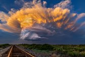
Dramatic supercell thunderstorm over railroad tracks in the Great Plains region of the United States. Maya Bay on Phi Phi Leh Island in Thailand with its iconic limestone cliffs and turquoise waters.
Maya Bay on Phi Phi Leh Island in Thailand with its iconic limestone cliffs and turquoise waters.
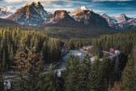
Morant's Curve in Banff National Park, Canadian Rockies, Alberta, Canada. Glacier National Park in Montana, featuring the distinctive layered sedimentary mountains of the Lewis Range.
Glacier National Park in Montana, featuring the distinctive layered sedimentary mountains of the Lewis Range.
 Hallstatt village on Lake Hallstatt in the Austrian Alps.
Hallstatt village on Lake Hallstatt in the Austrian Alps.
 Calvary Hill (Kalvária) in Banská Štiavnica, Slovakia, with its historic churches rising above morning fog in the mountainous landscape.
Calvary Hill (Kalvária) in Banská Štiavnica, Slovakia, with its historic churches rising above morning fog in the mountainous landscape.
Evening
 Hanalei Pier at sunset on the north shore of Kauai, Hawaii.
Hanalei Pier at sunset on the north shore of Kauai, Hawaii.
 A teenager's bedroom with vintage computer equipment, car posters, and a bunk bed.
A teenager's bedroom with vintage computer equipment, car posters, and a bunk bed.
 A misty forest road through a coniferous woodland, likely in a temperate region of Europe or North America.
A misty forest road through a coniferous woodland, likely in a temperate region of Europe or North America.
A cozy, illuminated café or small restaurant with outdoor seating viewed at twilight, likely in an urban neighborhood in Japan.
 This is an aerial view of Manhattan in New York City at dusk, with the Hudson River visible in the background.
This is an aerial view of Manhattan in New York City at dusk, with the Hudson River visible in the background.
 This appears to be an alpine forest trail in the Dolomites mountain range in northern Italy.
This appears to be an alpine forest trail in the Dolomites mountain range in northern Italy.
 A nostalgic 1980s-themed bedroom or game room filled with vintage movie posters, toys, and electronics.
A nostalgic 1980s-themed bedroom or game room filled with vintage movie posters, toys, and electronics.
 The Étretat Cliffs in Normandy, France, featuring the iconic natural arch and needle rock formation at sunset.
The Étretat Cliffs in Normandy, France, featuring the iconic natural arch and needle rock formation at sunset.
 The Matterhorn mountain reflected in Stellisee lake near Zermatt, Switzerland.
The Matterhorn mountain reflected in Stellisee lake near Zermatt, Switzerland.
 This is Hallstatt, Austria, a picturesque village nestled between mountains and Lake Hallstatt in the Salzkammergut region.
This is Hallstatt, Austria, a picturesque village nestled between mountains and Lake Hallstatt in the Salzkammergut region.
 This is Monte San Salvatore overlooking the city of Lugano on Lake Lugano in Switzerland at sunset.
This is Monte San Salvatore overlooking the city of Lugano on Lake Lugano in Switzerland at sunset.
 A traditional Dutch windmill at Kinderdijk, Netherlands, silhouetted against a twilight sky.
A traditional Dutch windmill at Kinderdijk, Netherlands, silhouetted against a twilight sky.
 Mount Fuji viewed from Chureito Pagoda in Fujiyoshida, Japan.
Mount Fuji viewed from Chureito Pagoda in Fujiyoshida, Japan.
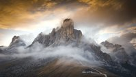
The Dolomites mountain range in northern Italy, specifically the distinctive peaks of Passo Giau with dramatic cloud formations at sunset. A cozy coffee shop with a reading nook featuring wooden tables, coffee cups, books, and large windows overlooking greenery.
A cozy coffee shop with a reading nook featuring wooden tables, coffee cups, books, and large windows overlooking greenery.
 Mount Fuji in Japan viewed from Lake Kawaguchi at sunset.
Mount Fuji in Japan viewed from Lake Kawaguchi at sunset.
 Mount Rainier National Park in Washington State at sunset with snow-covered landscape and alpine reflection pool.
Mount Rainier National Park in Washington State at sunset with snow-covered landscape and alpine reflection pool.
 Sand Harbor at Lake Tahoe, Nevada, featuring its iconic granite boulders and pine trees at sunset.
Sand Harbor at Lake Tahoe, Nevada, featuring its iconic granite boulders and pine trees at sunset.
 Mount Fuji in Japan viewed from Lake Motosu with alpenglow illuminating its snow-capped peak against a stormy sky.
Mount Fuji in Japan viewed from Lake Motosu with alpenglow illuminating its snow-capped peak against a stormy sky.
 This is an aerial view of Chicago's lakefront along Lake Michigan at twilight, showing Lake Shore Drive and the city skyline.
This is an aerial view of Chicago's lakefront along Lake Michigan at twilight, showing Lake Shore Drive and the city skyline.
 This is a coastal view of the Lofoten Islands in northern Norway during winter twilight, with snow-covered mountains across the fjord.
This is a coastal view of the Lofoten Islands in northern Norway during winter twilight, with snow-covered mountains across the fjord.
 This is the Ramon Crater (Makhtesh Ramon) in the Negev Desert, Israel, viewed at sunset from the cliff edge near Mitzpe Ramon.
This is the Ramon Crater (Makhtesh Ramon) in the Negev Desert, Israel, viewed at sunset from the cliff edge near Mitzpe Ramon.
Vintage steam locomotive 99 7247-2 traveling through a dense forest, likely on the Harz Narrow Gauge Railway in Germany.
 A Hankyu Railway train crossing a bridge in Osaka, Japan at sunset with the city skyline in the background.
A Hankyu Railway train crossing a bridge in Osaka, Japan at sunset with the city skyline in the background.
 This is the Rain Vortex waterfall inside the Jewel Changi Airport in Singapore.
This is the Rain Vortex waterfall inside the Jewel Changi Airport in Singapore.
 This is Astypalaia (or Chora), the main town on Astypalaia Island in Greece, with its distinctive whitewashed buildings and illuminated castle perched on a hilltop overlooking the Aegean Sea.
This is Astypalaia (or Chora), the main town on Astypalaia Island in Greece, with its distinctive whitewashed buildings and illuminated castle perched on a hilltop overlooking the Aegean Sea.
 Huangshan (Yellow Mountain) in Anhui Province, China.
Huangshan (Yellow Mountain) in Anhui Province, China.
 The Golden Gate Bridge in San Francisco, California at sunset with dramatic pink and purple skies.
The Golden Gate Bridge in San Francisco, California at sunset with dramatic pink and purple skies.
 A cozy café with a steaming cup of coffee by a rain-streaked window overlooking city lights.
A cozy café with a steaming cup of coffee by a rain-streaked window overlooking city lights.
 Canmore, Alberta with the Canadian Rocky Mountains in the background at sunset.
Canmore, Alberta with the Canadian Rocky Mountains in the background at sunset.
 A train passing through rice paddies in rural Japan during sunset.
A train passing through rice paddies in rural Japan during sunset.
 This is the town of Torbole on Lake Garda in northern Italy, captured during a colorful sunset.
This is the town of Torbole on Lake Garda in northern Italy, captured during a colorful sunset.
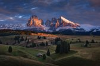
Alpe di Siusi (Seiser Alm) with the Sassolungo/Langkofel mountain group in the Dolomites, Italy.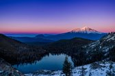
Mount Shasta viewed from Heart Lake in the Trinity Alps Wilderness, California.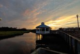
A waterfront gazebo on a coastal boardwalk, likely in a seaside town along the Atlantic coast.
Chicago skyline featuring the iconic John Hancock Center (now 875 North Michigan Avenue) along Lake Michigan at sunset.
Tropical coastline with palm trees silhouetted against a sunset, likely in the Caribbean or Southeast Asia.
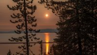
Sunset over Lake Tahoe with pine trees framing the golden reflection on the water.
A rural railway track stretching into the distance with the sun setting dramatically through clouds above.
 Highway overlooking Lake Tahoe with a rainbow forming during a storm.
Highway overlooking Lake Tahoe with a rainbow forming during a storm.
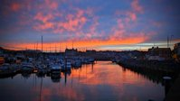
This is Kirkwall Marina in Orkney, Scotland, captured during a vibrant sunset.
SpaceX launch pad at Cape Canaveral Space Force Station in Florida with a Falcon rocket on the launch tower at sunset.
 The Bardenas Reales Natural Park in Navarre, Spain, featuring its distinctive badlands and mesa formations at sunset.
The Bardenas Reales Natural Park in Navarre, Spain, featuring its distinctive badlands and mesa formations at sunset.
 Silhouetted forest treeline against a dramatic orange and gray sunset sky.
Silhouetted forest treeline against a dramatic orange and gray sunset sky.
 Turnip Rock, a unique sea stack formation in Lake Huron near Port Austin, Michigan.
Turnip Rock, a unique sea stack formation in Lake Huron near Port Austin, Michigan.
 SpaceX Starship rocket on the launch pad at Starbase in Boca Chica, Texas, overlooking the Gulf of Mexico.
SpaceX Starship rocket on the launch pad at Starbase in Boca Chica, Texas, overlooking the Gulf of Mexico.
 Doha skyline viewed through the arches of the Museum of Islamic Art in Qatar.
Doha skyline viewed through the arches of the Museum of Islamic Art in Qatar.
 A lake in a northern wilderness region at sunset with silhouetted hills and a bare tree.
A lake in a northern wilderness region at sunset with silhouetted hills and a bare tree.
 New York City skyline at sunset, viewed from what appears to be Brooklyn with Manhattan's skyscrapers silhouetted against a vibrant orange and purple sky.
New York City skyline at sunset, viewed from what appears to be Brooklyn with Manhattan's skyscrapers silhouetted against a vibrant orange and purple sky.
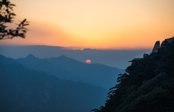
Sunset over Mount Huangshan (Yellow Mountain) in Anhui Province, China. This is Manarola, one of the five colorful cliffside villages of Cinque Terre in Italy.
This is Manarola, one of the five colorful cliffside villages of Cinque Terre in Italy.
 Glencoe in the Scottish Highlands, featuring Buachaille Etive Mòr mountain under a dramatic pink and purple sunset sky.
Glencoe in the Scottish Highlands, featuring Buachaille Etive Mòr mountain under a dramatic pink and purple sunset sky.
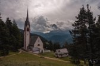
San Giovanni Church in Ranui, Val di Funes, Dolomites, Italy. Shorncliffe Pier in Queensland, Australia at sunset.
Shorncliffe Pier in Queensland, Australia at sunset.
 Florence Cathedral (Il Duomo di Firenze) with Giotto's Campanile in Florence, Italy.
Florence Cathedral (Il Duomo di Firenze) with Giotto's Campanile in Florence, Italy.
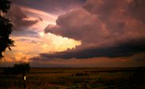
Rural farmland in the American Midwest with dramatic storm clouds at sunset. Midtown Manhattan in New York City, featuring historic skyscrapers and the distinctive copper-green roofed building.
Midtown Manhattan in New York City, featuring historic skyscrapers and the distinctive copper-green roofed building.
 This is Queenstown, New Zealand, situated on the shores of Lake Wakatipu with The Remarkables mountain range in the background.
This is Queenstown, New Zealand, situated on the shores of Lake Wakatipu with The Remarkables mountain range in the background.
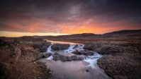
This appears to be a waterfall in Iceland, possibly in the highlands region, captured during a dramatic sunset. This is a panoramic view of the Milky Way galaxy arching over a desert landscape, likely in the southwestern United States.
This is a panoramic view of the Milky Way galaxy arching over a desert landscape, likely in the southwestern United States.
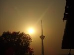
Milad Tower in Tehran, Iran during sunset.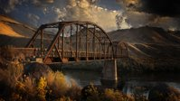
Historic steel truss bridge spanning a river in arid mountainous terrain, likely in the American Southwest.
San Francisco skyline with the Bay Bridge at sunset.
 A lakeside wooden cabin with warm lighting reflected in the water at dusk, likely in a Scandinavian region.
A lakeside wooden cabin with warm lighting reflected in the water at dusk, likely in a Scandinavian region.
 Church of St. Primoz near Jamnik, Slovenia, illuminated on a foggy hilltop.
Church of St. Primoz near Jamnik, Slovenia, illuminated on a foggy hilltop.
 A winding mountain road with light trails at dusk, likely in Da Lat, Vietnam.
A winding mountain road with light trails at dusk, likely in Da Lat, Vietnam.
 The Auvergne Volcanic Regional Park in France, featuring distinctive rock formations at sunset.
The Auvergne Volcanic Regional Park in France, featuring distinctive rock formations at sunset.
 A forest road likely in a national park with a digital sign warning "YOUR GPS IS WRONG."
A forest road likely in a national park with a digital sign warning "YOUR GPS IS WRONG."
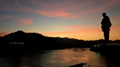
Statue of Unity in Gujarat, India, silhouetted against a sunset over the Narmada River. Eltz Castle (Burg Eltz), a medieval fortress nestled in the hills above the Moselle River in Germany.
Eltz Castle (Burg Eltz), a medieval fortress nestled in the hills above the Moselle River in Germany.
 Camps Bay in Cape Town, South Africa, nestled between the Twelve Apostles mountain range and the Atlantic Ocean at sunset.
Camps Bay in Cape Town, South Africa, nestled between the Twelve Apostles mountain range and the Atlantic Ocean at sunset.
 The Twelve Apostles limestone stacks along the Great Ocean Road in Victoria, Australia.
The Twelve Apostles limestone stacks along the Great Ocean Road in Victoria, Australia.
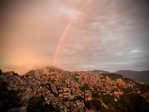
Shimla, Himachal Pradesh, India with densely packed hillside buildings under a rainbow at sunset.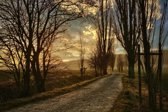
A rural country path lined with bare trees at sunset in what appears to be European countryside. This appears to be a Christmas tree on a floating platform in a cove along the Pacific Northwest coast, possibly in Alaska or British Columbia.
This appears to be a Christmas tree on a floating platform in a cove along the Pacific Northwest coast, possibly in Alaska or British Columbia.
Tokyo skyline featuring the Tokyo Skytree tower during a dramatic sunset with storm clouds.
 A dramatic lightning storm over a mountain peak in what appears to be the Alps, possibly in Switzerland or Austria.
A dramatic lightning storm over a mountain peak in what appears to be the Alps, possibly in Switzerland or Austria.
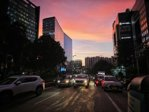
Cyberhub area in Gurugram, India, during sunset with HDFC Bank and IVY signage visible on buildings.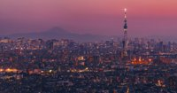
Tokyo skyline featuring the Tokyo Skytree tower with Mount Fuji visible in the background at sunset. This appears to be the California coastline along the Pacific Coast Highway, possibly near Big Sur or Malibu, captured during a dramatic sunset.
This appears to be the California coastline along the Pacific Coast Highway, possibly near Big Sur or Malibu, captured during a dramatic sunset.
Nubra Valley in Ladakh, India, with camel riders traversing the landscape at sunset.
 A rural highway stretching into the distance under dramatic storm clouds at dusk.
A rural highway stretching into the distance under dramatic storm clouds at dusk.
 Two Medicine Lake with Mount Sinopah in Glacier National Park, Montana during sunset.
Two Medicine Lake with Mount Sinopah in Glacier National Park, Montana during sunset.
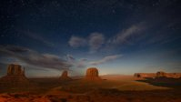
Monument Valley, located on the Arizona-Utah border, featuring its iconic sandstone buttes under a starry night sky. The Canadian Rockies in Banff National Park, Alberta, with dramatic mountain peaks silhouetted against a moody sky.
The Canadian Rockies in Banff National Park, Alberta, with dramatic mountain peaks silhouetted against a moody sky.
 A waterfront boardwalk in a coastal town at sunset with vibrant pink and purple skies reflecting on the water.
A waterfront boardwalk in a coastal town at sunset with vibrant pink and purple skies reflecting on the water.
 Chureito Pagoda at Arakurayama Sengen Park with Mount Fuji in the background, Japan.
Chureito Pagoda at Arakurayama Sengen Park with Mount Fuji in the background, Japan.
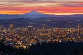
Portland, Oregon skyline at sunset with Mount Hood in the background. Rocky Mountain National Park in Colorado at sunset with dramatic orange and pink clouds illuminating the mountain landscape.
Rocky Mountain National Park in Colorado at sunset with dramatic orange and pink clouds illuminating the mountain landscape.
 Yosemite Valley in Yosemite National Park, California, featuring El Capitan, Bridalveil Fall, and misty valley floor.
Yosemite Valley in Yosemite National Park, California, featuring El Capitan, Bridalveil Fall, and misty valley floor.
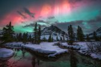
Northern lights (aurora borealis) over Bow Lake in Banff National Park, Canadian Rockies. Bow Lake in Banff National Park, Canadian Rockies, Alberta, Canada.
Bow Lake in Banff National Park, Canadian Rockies, Alberta, Canada.
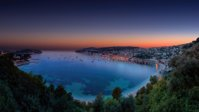
This is the Bay of Villefranche-sur-Mer on the French Riviera, captured at sunset with its distinctive curved harbor and turquoise waters. The Church of St. Johann (St. Magdalena) in Val di Funes with the Dolomites mountains (Odle/Geisler group) in South Tyrol, Italy.
The Church of St. Johann (St. Magdalena) in Val di Funes with the Dolomites mountains (Odle/Geisler group) in South Tyrol, Italy.
 A dramatic sunset over a small town nestled in a valley surrounded by hills or mountains.
A dramatic sunset over a small town nestled in a valley surrounded by hills or mountains.
Stanley Park Seawall in Vancouver, Canada during autumn.
Night
Aerial nighttime view of a major urban city, possibly New York City, with a dense grid of illuminated buildings and streets.
 This is an artistic representation of a spiral galaxy, likely depicting the Milky Way galaxy.
This is an artistic representation of a spiral galaxy, likely depicting the Milky Way galaxy.
 Earth viewed from space with the Milky Way galaxy visible in the background.
Earth viewed from space with the Milky Way galaxy visible in the background.
 Earth's orbit with an astronaut performing a spacewalk near a space station.
Earth's orbit with an astronaut performing a spacewalk near a space station.
 This appears to be Tenaya Lake in Yosemite National Park at night, with illuminated trees along the shoreline.
This appears to be Tenaya Lake in Yosemite National Park at night, with illuminated trees along the shoreline.
 The Northern Lights (Aurora Borealis) illuminating the night sky over a coniferous forest in the Arctic region.
The Northern Lights (Aurora Borealis) illuminating the night sky over a coniferous forest in the Arctic region.
 A silhouetted mountain landscape with a figure on a cliff edge against a bright yellow moon or sun.
A silhouetted mountain landscape with a figure on a cliff edge against a bright yellow moon or sun.
 Planet Earth viewed from space, showing the night side with city lights visible across Africa, Europe, and the Middle East.
Planet Earth viewed from space, showing the night side with city lights visible across Africa, Europe, and the Middle East.
 A misty bamboo forest at night with silhouettes against a blue twilight backdrop.
A misty bamboo forest at night with silhouettes against a blue twilight backdrop.
 A night landscape of mountain silhouettes under a full moon, possibly in a mountain range though the specific location cannot be definitively identified.
A night landscape of mountain silhouettes under a full moon, possibly in a mountain range though the specific location cannot be definitively identified.
 Mount Annapurna in the Himalayas of Nepal captured at night with snow-capped peaks against a starry sky.
Mount Annapurna in the Himalayas of Nepal captured at night with snow-capped peaks against a starry sky.
 A cosmic nebula with a black hole or dark void surrounded by colorful gas clouds in deep space.
A cosmic nebula with a black hole or dark void surrounded by colorful gas clouds in deep space.
 A snow-covered residential street at night illuminated by a single streetlamp in what appears to be a suburban neighborhood.
A snow-covered residential street at night illuminated by a single streetlamp in what appears to be a suburban neighborhood.
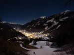
Alpine village nestled in a snow-covered valley in the Austrian or Swiss Alps at night.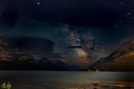
Waterton Lakes National Park in Alberta, Canada, with the Milky Way visible over the mountains. Mungo National Park in Australia with the Milky Way galaxy visible in the night sky.
Mungo National Park in Australia with the Milky Way galaxy visible in the night sky.
Midnight
 Earth's Moon, showing its cratered surface in a partial phase.
Earth's Moon, showing its cratered surface in a partial phase.
 Mathematical equations and formulas pattern background, not a physical location.
Mathematical equations and formulas pattern background, not a physical location.
 Artistic rendering of a black hole with an accretion disk in outer space.
Artistic rendering of a black hole with an accretion disk in outer space.
 Andromeda Galaxy (M31), a spiral galaxy approximately 2.5 million light-years from Earth.
Andromeda Galaxy (M31), a spiral galaxy approximately 2.5 million light-years from Earth.


.jpeg)


.jpeg)